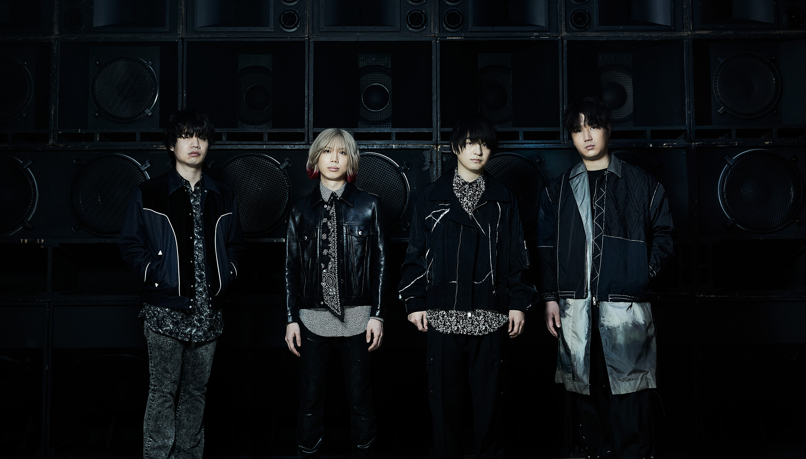

official 髭男 dism
プロフィール
2012 年 結成、愛称は「ヒゲダン」。
このバンド名には髭の似合う歳になっても、誰もがワクワクす るような音楽をこのメンバーでずっと続けて行きたいという意思が込められている。
2015年4月1stミニアルバム「ラブとピースは君の中」をリリースし、デビュー。
2018年4月Major 1st Single「ノーダウト」でメジャーデビューを果たした。
ブラックミュージックをはじめ、様々なジャンルをルーツとした音楽で全世代から支持を集め続けている。
おすすめの曲
髭男クイズ
第１問 紅白に出場した経験はあるでしょうか！
答(あるorない):
第２問 武道館でライブ経験は何回あるでしょうか！
答(数字で):